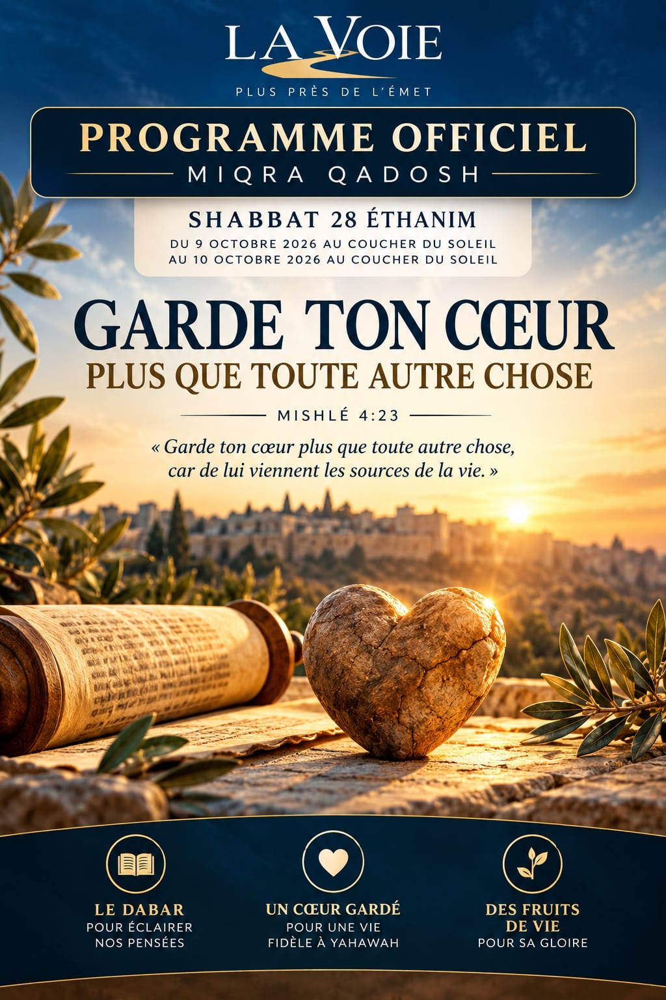

Programme officiel
Du vendredi 9 octobre 2026 (coucher du soleil) au samedi 10 octobre 2026 (coucher du soleil)
« Garde ton cœur plus que toute autre chose »
« Garde ton cœur plus que toute autre chose, car de lui viennent les sources de la vie. »
Mishlé 4:23
Question centrale — Comment protéger notre cœur contre les influences qui risquent de nous éloigner de Yahawah ?
✦ Écouter l'ʿAbodah
0:00 / 0:00
✦ Déroulement officiel